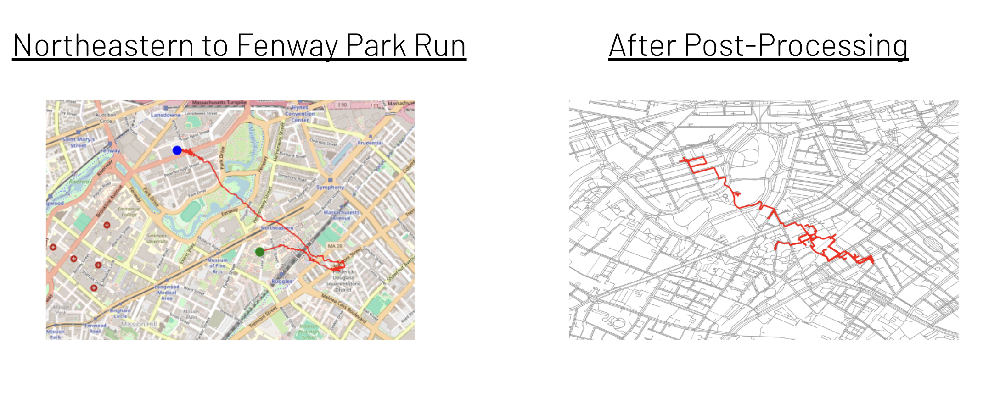

DeepRun - AI-Generated Running Routes

Project Overview
DeepRun is an innovative AI system that generates personalized running routes based on user location and preferences. Using deep learning techniques and spatial analysis, the system creates natural running paths that respect geographic constraints while providing novel routes for users seeking variety in their exercise routines.
Motivation
Have you ever wanted to go for a run but found yourself tired of the same old routes? Or perhaps you've seen interesting routes that others take but they're too far from your location? DeepRun addresses this problem by creating customized running routes based on your starting location and preferences, offering fresh paths for runners, walkers, and cyclists looking to explore their surroundings.
Data Collection & Processing
The project uses a dataset from Endomondo (formerly owned by Under Armour) containing approximately: - 250,000+ workout sessions - 70,000 running routes after filtering - Geographic coordinate sequences - Map imagery and terrain data
A significant challenge was converting coordinate data to map visualization. We developed a custom process that: 1. Retrieved map tiles using Folium and OpenStreetMap 2. Placed reference markers at map corners 3. Captured screenshots with a headless browser 4. Used the reference points to interpolate correct route positions on maps 5. Generated consistent training examples of coordinate sequences with corresponding map imagery
Model Evolution
Initial Approach: Conditional GAN
Our first attempt used a Conditional Generative Adversarial Network with: - Conditional parameters for route distance and intensity - 500 latitude/longitude points converted to xy coordinates - A generator-discriminator architecture with multiple output heads
This approach struggled due to the high-resolution image inputs and complex spatial relationships, resulting in unrealistic routes clustered in corners of the map.
Transformer Model
We pivoted to a transformer-based approach, recognizing that routes are sequential data: - 2D spatial attention mechanisms to understand map features - Conditional embeddings for route requirements - Combined map input with condition parameters
This improved results but still produced jittery paths with abrupt jumps and illogical patterns (like running in circles or through water bodies).
LSTM Solution
Our breakthrough came with an LSTM-based architecture: - Sequential coordinate prediction - Map feature extraction using a CNN on 128x128 pixel crops around current position - Separate embedding networks for coordinates and condition features - Feature fusion through deep networks
The LSTM approach finally produced realistic-looking routes but required further refinement through a custom loss function to address specific issues.
Custom Loss Function
To generate truly useful routes, we implemented several specialized loss components: 1. Endpoint Penalty - Ensures routes end at the desired destination 2. Blue Area Penalty - Prevents routes from crossing water bodies by analyzing map colors 3. Step Size Consistency - Maintains a realistic and consistent pace 4. Color Change Penalty - Encourages staying on similar terrain (like roads)
These constraints successfully guided the model to produce routes that follow logical paths while meeting user requirements.
Post-Processing
The raw routes still required refinement, so we implemented post-processing techniques: - Mapping route points to the nearest road network nodes - Snapping coordinates to valid paths using OpenStreetMap graph data - Smoothing and optimizing the final route
This resulted in routes that are actually followable and respect real-world constraints.
Results & Example
We tested our system on familiar territory, generating a route from a classroom to a nearby park. While not perfect, the system successfully created a reasonable running route that: - Started and ended at the specified points - Generally followed roads and paths - Avoided obstacles like buildings and water - Created a path suitable for exercise rather than simple transportation
Challenges & Limitations
The project faced significant technical challenges: - Handling complex, high-resolution map data - Computational resource constraints for training - Difficulty in keeping routes on roads without explicit road network data - Balancing route quality with training efficiency
Future Work
We're excited about several directions for future development: - Implementing graph neural networks for better road network adherence - Improving training with more computational resources - Expanding to support walking, biking, and hiking routes with terrain-specific considerations - Incorporating elevation data and user fitness levels - Adding support for loop routes that return to the starting point
Technical Significance
This project demonstrates the potential of deep learning for complex spatial and sequential generation tasks. By combining computer vision, sequence modeling, and geographic constraints, DeepRun showcases how AI can be applied to create personalized, practical solutions for everyday activities.
Technologies Used
- Python
- TensorFlow
- Folium
- OpenStreetMap
- CNN
- LSTM
- Sequence Modeling